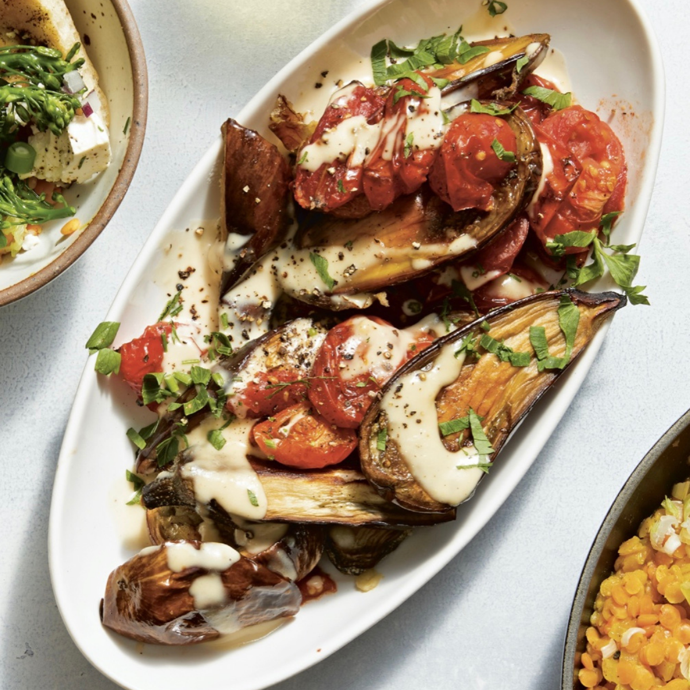

Sesame Bok Choy:

Ingredients:
- 1 lbs. baby bok choy
- 2 tbsp. neutral oil (e.g., vegetable or grapeseed oil)
- 1 tsp. toasted sesame oil
- 1/4 cup chopped yellow onion
- 1 garlic clove, minced
- 1 (1-inch) piece fresh ginger, peeled and minced (about 1 tsp.)
- Kosher salt and freshly grounded black pepper
- Chopped scallions (white and light green parts only)
- 1 tbsp. toasted sesame seeds
Recipe:
- Bring a large pot of water to a boil. Add the bok choy and cook until tender, about 5 minutes. Drain and return the pot to the stove.
- Over medium heat, add both oils, the onion, garlic, ginger, salt, and pepper, stirring until soft and fragrant for about 3 minutes.
- Toss in the bok choy. Serve topped with scallions and sesame oils.
Roasted Eggplant and Tomatoes with Miso-Tahini Sauce:
Ingredients:
- 2 lbs. Fairy Tale eggplants (halved) or Graffiti eggplants (about 5), cut into 1-inch-thick slices
- 1/2 cup extra-virgin olive oil
- Kosher salt and freshly ground black pepper to taste
- Kosher salt and freshly ground black pepper to taste
- 10 to 12 small tomatoes, halved
- 1 tsp. sweet white miso
- 1/2 tsp. fresh lemon juice
- 1 tsp maple syrup
Recipe:
- Preheat the oven to 425F.
- In a large bowl, toss the eggplant pieces with the olive oil, salt, and pepper, then place the eggplant in an even single layer on a parchment paper-lined sheet pan.
- Add the tomatoes to the same large bowl and toss them very gently in whatever oil remains.
- Nestle the tomatoes in between the eggplant pieces on the sheet pan.
- Bake for 25-30 minutes, until the effplant looks golden and crispy and the tomatoes are shriveled.
- Let them cool slighly.
- Transfer the vegetables to a serving bowl, drizzle with tahini-miso sauce, and top with thyme. Serve warm or at room temperature.

Andy's Spicy Diced Potatoes:

Ingredients:
- 1/3 cup vegetable oil
- 2 lbs. Yukon Gold or red potatoes, peeled and cut into 1/4-inch dice
- 1 tbsp. smoked paprika
- 1 tsp. ground cumin
- 1 tsp. garlic pwder
- 1 tsp. onion powdeer
- 1/2 tsp. cayenne pepper
- Kosher salt and freshly ground black pepper to taste
Recipe:
- In a very large skillet, heat the oil over medium-high heat.
- Once the oil is hot and shimmery, add the potatoes, then toss in the paprika, cumin, garlic powder, onion powder, cayenne, salt, and black pepper.
- Let the potatoes sit, untouched in a single layer, until they are brown and crisp on the bottom for about 5 minutes.
- Stir and let them sit another 5 minutes.
- Repeat until the potatoes are cooked through and crispy.
- Serve hot.